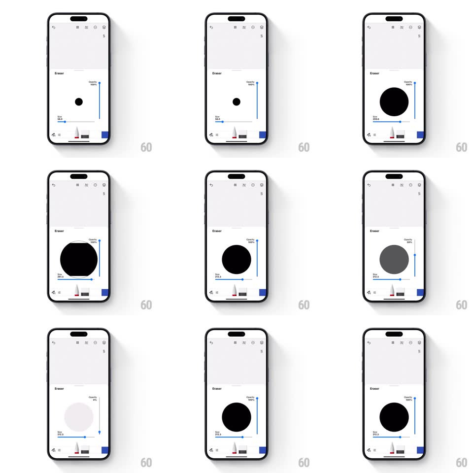

Media
Frame-by-frame

Rebuild this interaction 1:1: Tayasui Sketches' eraser settings - a floating panel where dragging Size and Opacity sliders rescales and re-shades a live preview circle in real time, showing the exact brush stamp before you touch the canvas.

Rebuild this interaction 1:1: Tayasui Sketches' eraser settings - a floating panel where dragging Size and Opacity sliders rescales and re-shades a live preview circle in real time, showing the exact brush stamp before you touch the canvas. ## Integration Integration: stack-agnostic spec - springs given as stiffness/damping, timed motions as duration + curve; map every value to your framework and animation library of choice. ## Scene Canvas above a tool dock. The eraser settings panel (floating white card): "Eraser" title, a large black preview circle centered, a vertical "Opacity" slider on the right with a live % label, a horizontal "Size" slider below with a live numeric label. ## Motion spec Pattern: live-preview dual sliders. - Panel entry: rises from the dock (spring ~340/22), preview circle popping in slightly late (scale 0.8 -> 1, spring ~400/20). - Size drag: the preview circle scales 1:1 with the slider value, clamped with 50ms smoothing so it never strobes; the numeric label (e.g. "212.3") updates every frame. - Opacity drag: the circle's fill fades between solid black and pale gray (real alpha), its % label updating live; at low opacity the circle reads as a ghost stamp. - Releasing either slider: the thumb settles with a tiny spring (~500/25) and the preview holds - no snap-back. - Panel exit (tap outside): drops back into the dock (250ms, ease-in), the eraser icon in the dock reflecting the new size via its own stroke weight. ## Calibration - Preview circle max ~30% of panel width; min stays visible at 8px - never vanishes. - Label typography is small (11px) gray - data, not decoration. ## Reduced motion Panel crossfades; preview updates without entry pop. ## Don't miss - The preview is a real render of the brush (size AND alpha), not a static icon - it must match the first canvas stroke exactly. - Sliders are orthogonal and independent: opacity is vertical, size horizontal - easy to grab one without nudging the other.